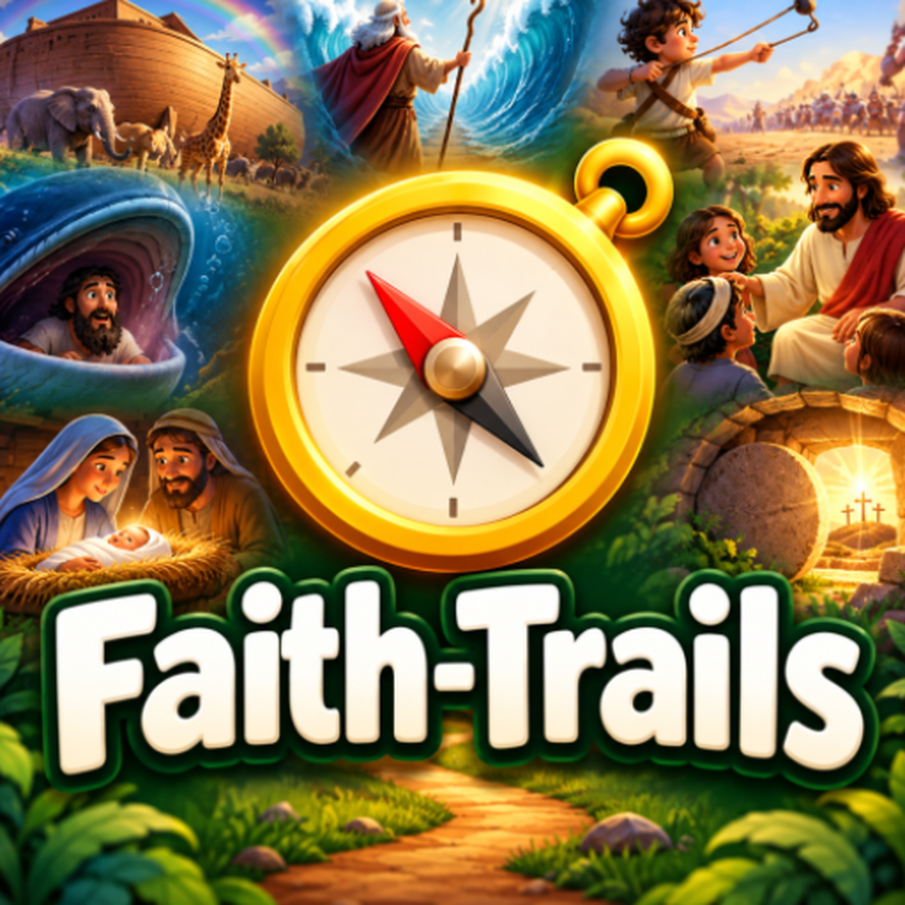
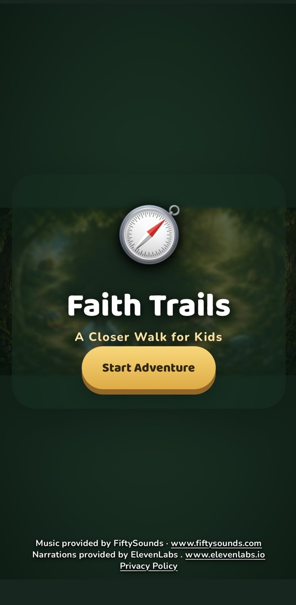
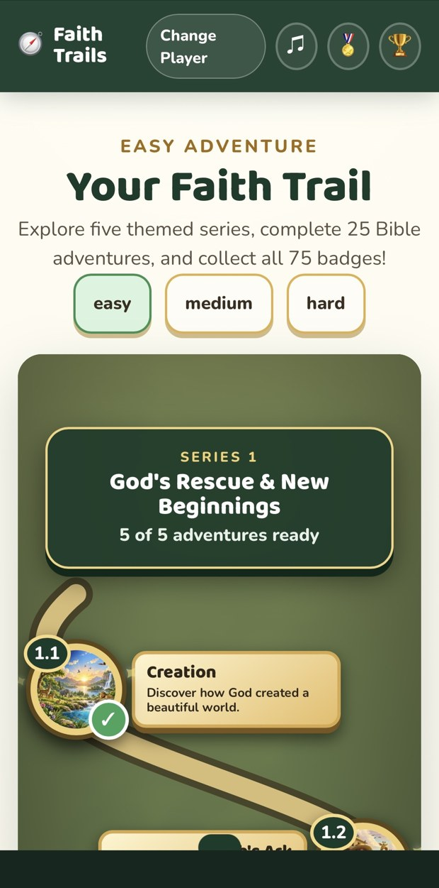
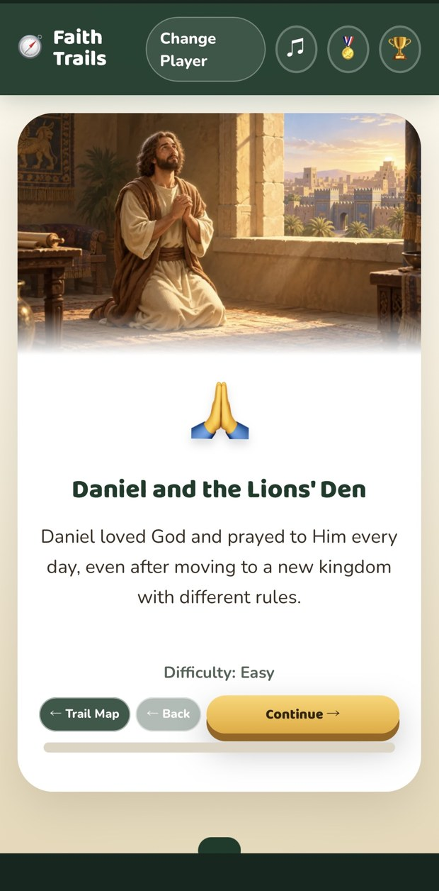
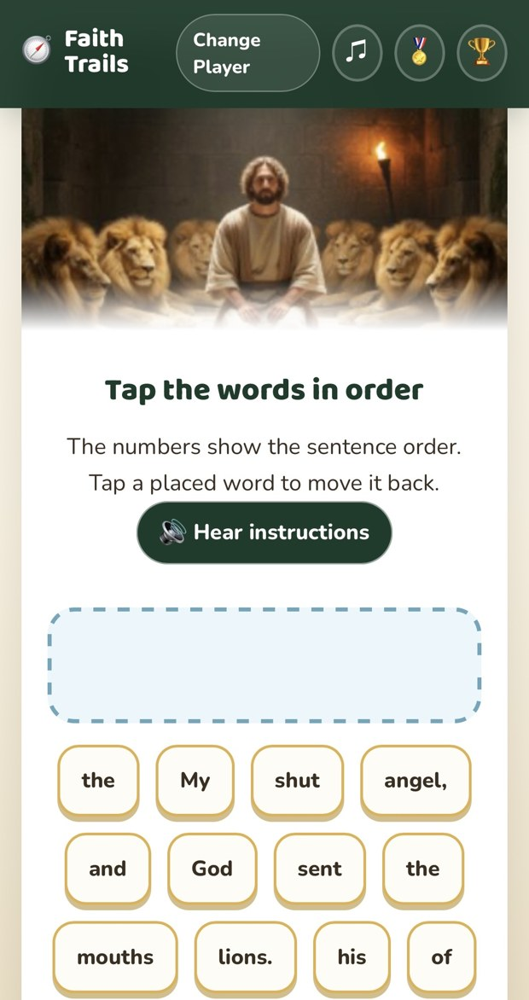
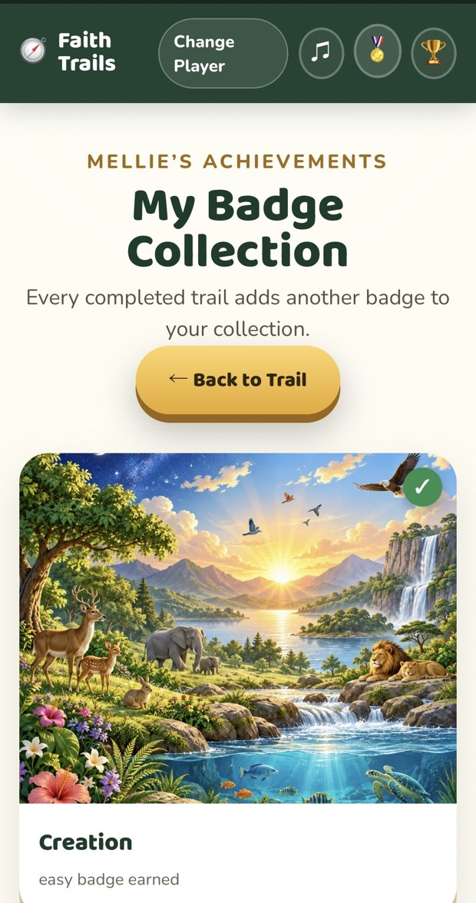
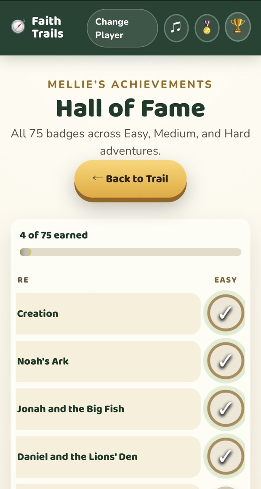

Explore at your own pace
Choose Easy, Medium, or Hard at the start of a quest, and revisit earlier slides as you learn.
A Bible Adventure for Kids
Follow a trail through Bible stories, build memory verses, and celebrate every step of the journey.
$4.99 · One-time purchase for iPhone & iPad

Choose Easy, Medium, or Hard at the start of a quest, and revisit earlier slides as you learn.
Narration and music bring the Bible stories to life. Audio controls let you choose how to listen.
Read Bible stories and practice memory verses with interactive activities.
Earn badges, enjoy the Golden Trail and Grand Champion celebrations, and create a certificate.
Use a first name or nickname for your player profile and explore Design Your Own Badge.
Unlock the series in order and return to earlier quests to explore them again.






Your six existing screenshots are preserved; keep them in the assets folder.
Visit our support and privacy pages for more information.
Visit App Support →